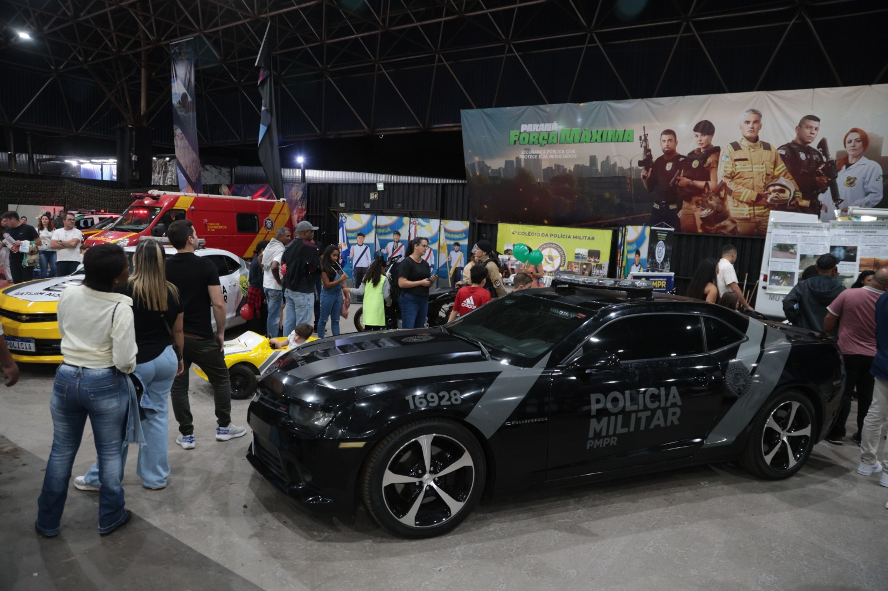

Polícia Militar
Aprendemos neste estande as subdivisões da polícia militar. Essas subdivisões são: Polícia Ambiental, BOPE, Corpo de Bombeiros Militar, ROCAM, SHOCK. Para entrar em alguma dessas subdivisões, é necessário algum curso especializado.

Esses dois carros foram apreendidos em operações da polícia militar do Paraná. O Camaro preto é de 2016 e o amarelo é de 2015. Eles estavam expostos no estande da polícia militar na Expoingá 2025.
Imagem retirada do site oficial da Expoingá.